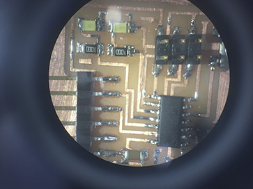

Week 4
To-do:
Re-draw and echo the hello world board
Add (at least) a button and LED (with current-limiting resistor)
atavism: evolutionary throwback
cathode: negatively charged electrode by which electrons enter a device
anode: the opposite of a cathode, i.e.positively charged electrode by which electrons leave a device
Moore's Law: an observation made in 1965 by Gordon Moore, co-founder of Intel, predicting that the number of transistors in a dense intergrated circuit will double every two years. While Moore's law held true for several decades, the trend has slowed down cosiderably as physical limits to transistor scaling has been reached
Kirchhoff's circuit laws: a set of rules first described in 1845 by Gustav Kirchhoff
Kirchhoff's current law (KCL): indicates that at any node in an electrical circuit, the sum of currents flowing into the circuit and the sum of currents flowing out of the circuit must equal
Kirchhoff's voltage law (KVL): the sum of electrical potential differences (voltage) around any closed network is zero
medial axis: also know as cut locus, is the set of all points having more than one closest point to the object's boundary
Hello... EAGLE?
This week's assignment came with a set of unexpected technical challenges. From Eagle's lack of user-friendliness (the best of which, in my opinion, is the lack of partial search) to the Roland mill refusing to cut the outer border of my board (table saw came in handy) - pit falls were around every corner, until I got to soldering. Words cannot convey the unbridled joy I felt when testing my board - all of the traces seemed to check out.
- 


The board above has two additional LED's - here are my Eagle schematic and board files.
Morti
In an attempt to get better acquainted with circuit board construction and to have some fun, I designed a custom circuit board in the shape of a skull.